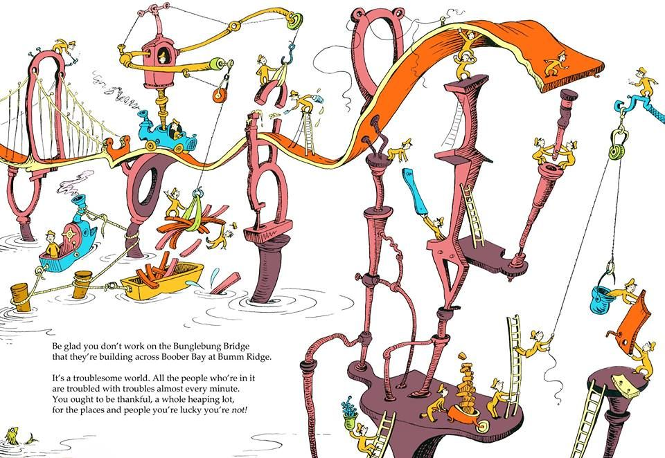
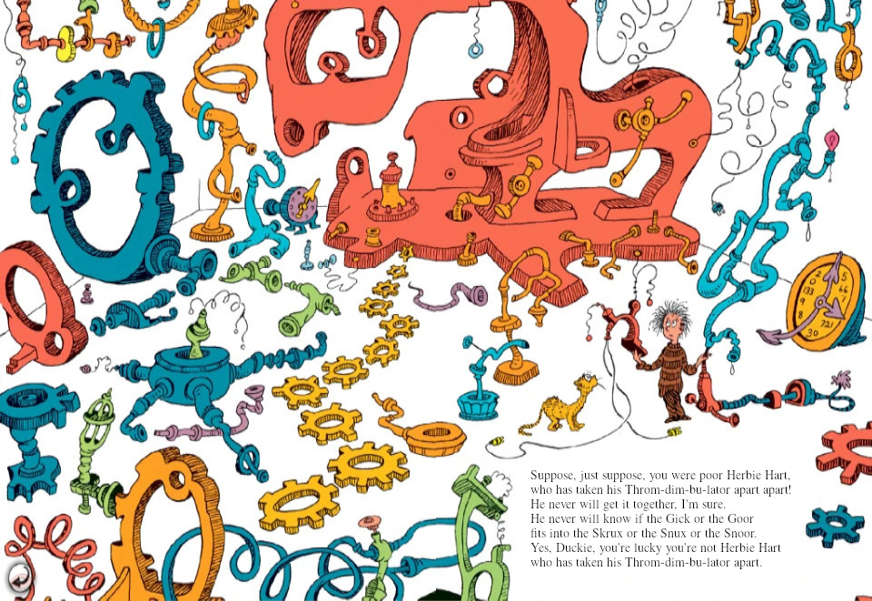

Dr. Seuss, Foundationalism, and Noetic Structure
Noetic Structure and Ga-Zair
In a prior article, we discussed how models can correspond to reality and the implications of employing multiple conflicting models at the same time. In this article, we will look at how conflicts and inconsistencies function not only between individual models but across a person's entire belief system.
Many beliefs are built upon other beliefs. Believing that a computer could be conscious might be downstream of one's belief that the human mind is purely a material system. Believing that fornication is wrong might be the result of one's belief that a particular religious text has divine authority. We can think of one's set of beliefs like a giant structure: beliefs resting atop beliefs resting atop beliefs. Each belief is founded on the beliefs below it. Think of a five-year-old who asks "why?" and then follows every answer given with yet another "why?" The chain of beliefs is traversed down towards beliefs that are more and more fundamental. All of one's beliefs fit into this enormous, interconnected, towering structure.
This is often referred to as a noetic structure. Sometimes, a noetic structure is seen as a web with the most central and foundational beliefs at the center, and beliefs further downstream from those central beliefs towards the outer edges. However, for the sake of this discussion, we will view one's beliefs as forming something like a tower. The most basic and foundational beliefs are at the base, and layers of belief are placed above. Each layer is derived from the beliefs below it. It may branch and branch again into towers that deal with isolated issues and topics. This image is like that of Ga-Zair from Dr. Seuss's Did I Ever Tell You How Lucky You Are?, consisting of towering stacks of varied and interconnected elements.
Foundationalism
Perhaps the most interesting part of this tower of belief is its base. It appears that there must be some beliefs that sit at the very bottom and are not underpinned by anything. These would sit somewhere below the bottom of the frame in the image above. It would appear that beliefs at the very bottom could not really be justified in the sense of being based on anything that comes before them. This is the fundamental objection to foundationalism: that there are some beliefs that are simply presupposed. Two of the clearest of these are the laws of logic (e.g., law of non-contradiction, law of excluded middle, law of identity) and the basic reliability of sensory perception (e.g., the things one sees are generally real). A foundationalist can't justify these in the same way that the beliefs based on them are justified. One might argue that they are somehow justified by being self-evident or directly experienced, but we will simply consider them to be presuppositions for the sake of our discussion here.
Some philosophers would reject foundationalism in favor of coherentism.1 They believe that instead of starting with foundational beliefs at the bottom of the structure, one should instead seek to validate the truth of all of the components within the structure by showing that they form a coherent whole. The problem that foundationalists will often point out with this is that there may exist systems that are false yet coherent. Some might also argue that most people who are coherentists will, in practice, presuppose the laws of logic and reliability of sensory perception, meaning that they would be biased against any framework that denies these, even if it is coherent. In other words, humans function as foundationalists even if they claim coherentism.
A good epistemologist might claim that the above discussion of foundationalism and coherentism is overly simplistic. The defense of coherentism is not thorough, and we have not really delved into whether there is a way for the foundationalist to justify his foundational axioms. However, our focus here is how humans really build a belief system rather than how a philosopher might argue it should hypothetically be done.
Bunglebung Bridge
Although foundationalism forces us to make some presuppositions about our most foundational knowledge, if those presuppositions are true, we can, in principle, ensure that all of the knowledge that we derive downstream through deduction is true too. However, in practice, every person's noetic structure is a lot less formal and tidy.
When a baby is born, she doesn't start by learning formal logic and then reasoning from there. She learns by intuition and mimicry. By the age of three, when she is asked "Why do you want the cookie?" she may reply with "Because!" The fact that she can't express any underlying logic or reason for why is of little concern to her.
By the time a child is four years old, she will generally understand that pulling her pants down in public is bad, but it is fine in the bathroom stall. If her two-year-old friend pulls his pants down in public (because he doesn't know any better), the four-year-old will express either consternation or laughter. She clearly knows that that's just not what you're supposed to do in public. However, if you ask a few questions, you'll find that she has no underlying reasoning for this. She has no idea what the significance of one's private parts is or why covering them is any more important than covering one's forehead or knees. In spite of that, her belief that pulling one's pants down is bad might be just as strong as that of the PhD psychologist who wrote his dissertation on the topic.
When the child starts school, she will learn that the Earth is a ball and that giant dinosaurs once existed. She will probably accept these without delving into the underlying evidence. She "knows" that 1 + 1 = 2, but she didn't even read Whitehead and Russell's 300 pages of proofs that ground this idea! She simply accepts the testimony of her teacher. Of course, we could classify testimony as a type of evidence that could be used to justify a belief. However, this same justification would apply if she were homeschooled by a person who taught the Earth was flat. The child doesn't have an effective means of evaluating the credibility of this testimony, so we won't practically consider it to be a real justification for our purposes here.
Even as adults, we have many unjustified beliefs. We may be able to justify some of our beliefs from first principles. Maybe one has read Whitehead and Russell's proof, fully justifying the belief that 1 + 1 = 2. Perhaps we don't have a formal logical proof that informs us of the Earth's shape or the societal consequences of nudity, but we might still have a strong inductive argument. However, we also likely have many beliefs that we've adopted but can't actually justify, and we may build even more beliefs on top of these unjustified beliefs that we have adopted. Just because a belief is unjustified doesn't mean it's false. The schoolgirl couldn't justify her belief in dinosaurs even though it is true. Many people may know that there are an infinite number of prime numbers even if they can't actually articulate the proof of this.2 However, an unjustified belief may very well be found false once one attempts to justify it, such as the notion that shaved hair regrows thicker.
At the end of the day, we don't derive all our beliefs from first principles. There may be some that we do, and there are some things that we might not have deductive proof for while still having very sound evidence and reasoning. Let's visualize that as a strong tower in which each layer is securely built on the one below it all the way down to the base. We might also have beliefs that we have some limited justification for based on limited data, heuristics, or weak reasoning. Let's visualize that as the tenuous, teetering towers of Bunglebung Bridge. They are supported from below, but not well. They are better than totally unjustified beliefs, but there is still a good chance that they could be wrong. Finally, we have beliefs that we have no justification for at all. These are things we simply accepted and never truly questioned. These aren't tied down to a foundation at all. Let's visualize them as little floating islands that hang on nothing.

When we look at our noetic structure as a whole, we find a mixture of all of the structures mentioned above. We find solid towers, teetering spires, and floating islands. They may work in combination too. One might find a solid tower with teetering spires built on top. These are tenuous beliefs built on top of solid ones. We could even use solid deductive reasoning to form a belief based on other beliefs that we accepted without evidence. This would be a strong tower built on a floating island. In spite of the integrity of the tower, its conclusions can't be trusted because of its lack of foundation. Additionally, let's not forget what this whole thing is built upon. The entire structure rests on fundamental beliefs that must be presuppositions (e.g., the laws of logic and basic reliability of sensory perception). Thus, this entire structure rests upon pillars that ultimately rest on just a few little floating islands at the bottom hanging on nothing at all.3
In addition to all of this, let's note that, in large part, we do not build our noetic structure from the bottom up. We often build top down, such as when we first learn that dinosaurs existed and then later learn why we know they existed. The belief started as a foundationless floating island, and we later built downward until we were able to connect it to something below. Because we can simultaneously build down from existing beliefs towards first principles and build up from our existing beliefs towards new beliefs, we can look at this structure as being built from the middle out. It may remind us of the utter chaos of the construction of Bunglebung Bridge. Our noetic structure is not a clear, simple arrangement of beliefs built from the bottom up; it is a clumsy and unstable mess, often built from the middle out.
Herbie Hart
Now that we recognize that our noetic structures have been built in a clumsy and inconsistent manner, our temptation might be to say that the truly intellectually consistent thing to do is to throw out our whole noetic structure and build up a new one from first principles, building from the bottom up and grounding every idea firmly in those beneath it. However, there are two practical problems with this.
Firstly, the task would be almost impossibly complex and time-consuming. Tearing our entire noetic structure to pieces and then trying to build an entirely new one in its place from the ground up is a task that is difficult to even describe. We might think of poor Herbie Hart, who has taken his Throm-dim-bu-lator apart. Poor Herbie has no hope of ever building the whole thing back up again. Doing this by deduction from first principles is unthinkable. Just getting to the point of being able to say 1 + 1 = 2 could take 300 pages. Perhaps this is unfair, and we should allow for inductive methods that introduce some level of uncertainty. How much uncertainty should we allow then? May one trust the book that tells one about the fossils of triceratops or must one travel to the Dakotas and find them in the dirt oneself? This may seem unreasonable and pedantic, but the difference between the most absurdly strict inductive method and Bunglebung Bridge is one of degree, not kind.

Secondly, it's not clear that we could truly divest ourselves of our current noetic structure. We could try to start over from first principles in practice, but deep down, we would still believe many of the things from our existing noetic structure. I can say I am going to examine whether the Earth is round or flat objectively without prior bias, but that doesn't mean that, deep down, I don't still intuitively believe that it is round. Now this doesn't mean we can't build things from first principles. It does mean we would have to do it piece by piece while most of our original noetic structure stays intact for most practical purposes.
As nice as it would be to knock down Bunglebung Bridge and build something new from scratch, that's not an option. Our unjustified, false, and conflicting beliefs cannot all be eliminated at once. The old structure must remain intact and be renovated bit by bit. By finding existing views that conflict or that cannot be justified by the beliefs below them, we slowly build a more stable and grounded framework.
The Trap of Eliminating All Conflicting Views
If we can't tear down our whole noetic structure at once, then our strategy might naturally be to eliminate all conflicts in our noetic structure. However, this can actually present a problem that prevents us from moving towards the truth. Optimizing for minimum conflict between the views in one's noetic structure will not always correlate with a reduction in the number of false views.
Imagine one has a large edifice of related beliefs (such as a political system or religion). Then, he encounters a new belief or piece of information that is at odds with his larger edifice of thought. If the goal is to eliminate conflicts, one can simply reject the new belief. However, this can function as an unhealthy shield of the existing beliefs. If a large edifice of interconnected, untrue beliefs is already present, new beliefs that might challenge them may be rejected to allow the noetic structure to continue to appear coherent. Why would one accept an isolated belief that conflicts with many beliefs that one already "knows" to be true?
Perhaps the best way to solve this problem is by methodically tracing the noetic structure to its foundation. When a new piece of knowledge is encountered that seems to conflict with a large body of existing belief, neither should win by default. Both should be fully traced back to first principles until it is clear which one contains error. However, this brings us back to the practical problems mentioned above. The noetic structure is huge, and deep analysis takes time. With the time constraints of daily life, a less rigorous yet still reasonably effective method may be needed to deal with this type of new information.
The Ironic Advantage of Permitting Conflicting Views
The difficulty here stems from the choice between either rejecting new information or rejecting the old structure. This choice often requires very deep analysis, which isn't always practical. However, we are in luck. The choice is a false dichotomy! The hidden third option is to allow for inconsistency in the short term. When one encounters a new piece of information that appears to be true but doesn't fit with what one already believes, he can add it to his beliefs anyway, allowing for the inconsistency. This was mentioned in a prior article, which discussed the need to sometimes accept multiple conflicting models while knowing that they can't all be true. We try to use the explanatory power of both while not committing to full belief in either. The hope is that eventually, either the old views will break down, the new knowledge will be proven false, or some unforeseen harmony between them will be found.
An example of this can be drawn from cosmology. Newton's theory of universal gravitation explained the motion of the planets around the Sun fairly well. However, Uranus's orbit differed from what was to be expected. If one wanted a completely consistent model, one could either reject the measurements of Uranus's orbit or reject Newton's theory. This perceived conflict persisted until the mid-1800s, when Neptune was discovered, explaining the anomalies in the orbit of Uranus. The search to find a means of explaining why conflict existed was instrumental in finding Neptune. This is a case of unforeseen harmony being found between conflicting knowledge. However, we could just as easily imagine a scenario in which the measurements of Uranus were eventually found to be in error or Newton's theory was found incomplete.4 In either case, prematurely rejecting either seemingly correct piece of knowledge, in spite of their apparent conflict, could commit us to false conclusions.
Inconsistency isn't something that we ultimately want, but allowing knowledge that contradicts existing belief to build up over time should drive us towards truth. The important thing is that we acknowledge these conflicts and don't sweep them under the rug. It's possible to allow conflicts to exist and never resolve them, but that is not the goal. This system isn't perfect, and determining if new information "appears true" even though it conflicts with prior beliefs is an entire discussion unto itself. However, in spite of these limitations, yet-to-be-resolved conflicts are a necessary part of the search for truth.
Conclusion
We need the humility to understand that our beliefs are inconsistent and not all true. We need the humility not only to admit this, but to take the practical step of allowing ourselves to hold seemingly true beliefs that seem to contradict beliefs that we already have. Otherwise, we can end up with a fairly consistent-looking set of beliefs and a false sense that they must all be true.
- Another school of thought regarding epistemology is infinitism, which claims that knowledge can be justified by an infinite regress of reasons. This view is only held by a small minority of philosophers.
- The list must be infinite because if you multiply all the primes in the finite list and add 1, you will always get a number that is a prime or has a prime factor that wasn't on the list.
- Some may dispute this.
- General relativity does explain some minor anomalies in orbits (due to the curvature of spacetime) that simple Newtonian gravity can't. These anomalies are minor in our solar system, although they have a greater effect on the inner planets.
| Published November 18, 2026 |
|---|